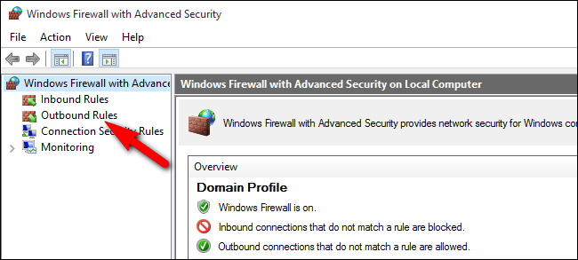
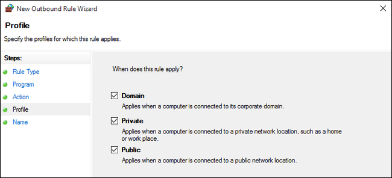
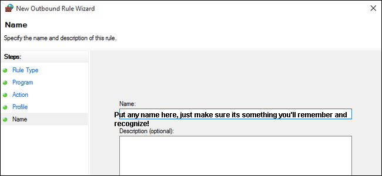
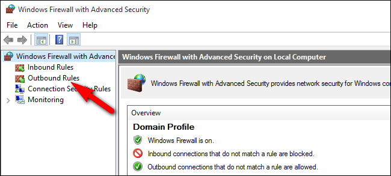
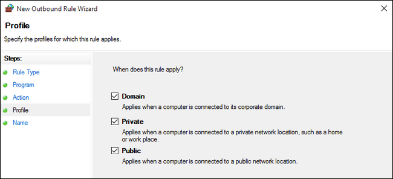
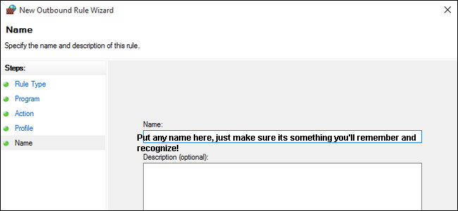

Securing your Client from Telemetry (ncdiagS32.exe)
Posted: Thu Feb 02, 2017 2:55 am
Good morning all,
During my messind around and editing AION files, I came to notice a constant creation of ZIP files. Having done some research I found out the following:
How to prevent this:
In order to prevent anything from being sent to anywhere through telematry services, we are going to block the two EXEs in the Windows firewall:
1. Navigate to the Control Panel and select Windows Firewall to bring up the basic Firewall interface

2. Click on “Advanced settings” to access the advanced Firewall interface (Left hand side menu)

(I’d encourage you follow along closely, leaving anything outside the scope of the tutorial and your experience level alone; mucking up your firewall rules is a surefire way to a big headache)
3. In the far left navigation pane, select “Outbound Rules”. This will pull up all the existing outbound firewall rules.

4. In the far right navigation pane select “New Rule…”

5. By default the rule type selection should be “Program”, but confirm that it is before clicking “Next”.

6. Here you will insert the path to the program you wish to block.
eg.
and repeat for the following program paths:
For easiness sake, just repeat the process from step 4.
7. Once you’ve selected your application and confirmed the path, click “Next” & on the next screen confirm that “Block the connection” is selected. Click “Next”.

8. On the next page you’ll be asked to select when the rule applies (by default all three items are checked). It’s important to CHECK ALL OF THEM!

9. Name the rule! This can be anything (I usually name it after the EXE), just make sure you its something you recognise and remember!

10. When you’ve filled the appropriate information in, click “Finish”.
During my messind around and editing AION files, I came to notice a constant creation of ZIP files. Having done some research I found out the following:
- 1. ncdiagS64.exe & ncdiagS32.exe is a diagnostics tool used to collect your PCs info. It is used to create a common & compatable profile for clients tweaking sake. It also sends any Injected DLLs and a log of accessed offsets.
2. It sends the info to NCSoft in Korea (dev IP) and to a Gameforge IP (can't pinpoint the exact server pool).
3. We do not want this - chances are your tweaking your system.cfg and editing PAK files anyway, so I doubt your gonna need a diagnostics log to send for support.
How to prevent this:
In order to prevent anything from being sent to anywhere through telematry services, we are going to block the two EXEs in the Windows firewall:
1. Navigate to the Control Panel and select Windows Firewall to bring up the basic Firewall interface
2. Click on “Advanced settings” to access the advanced Firewall interface (Left hand side menu)

(I’d encourage you follow along closely, leaving anything outside the scope of the tutorial and your experience level alone; mucking up your firewall rules is a surefire way to a big headache)
3. In the far left navigation pane, select “Outbound Rules”. This will pull up all the existing outbound firewall rules.
4. In the far right navigation pane select “New Rule…”
5. By default the rule type selection should be “Program”, but confirm that it is before clicking “Next”.
6. Here you will insert the path to the program you wish to block.
eg.
Code: Select all
C:\games\aioneu\bin32\ncdiagS32.exeCode: Select all
bin32\ncdiagS32.exe
bin32\ncdiagS64.exe
bin64\ncdiagS32.exe
bin64\ncdiagS64.exe
7. Once you’ve selected your application and confirmed the path, click “Next” & on the next screen confirm that “Block the connection” is selected. Click “Next”.
8. On the next page you’ll be asked to select when the rule applies (by default all three items are checked). It’s important to CHECK ALL OF THEM!

9. Name the rule! This can be anything (I usually name it after the EXE), just make sure you its something you recognise and remember!

10. When you’ve filled the appropriate information in, click “Finish”.